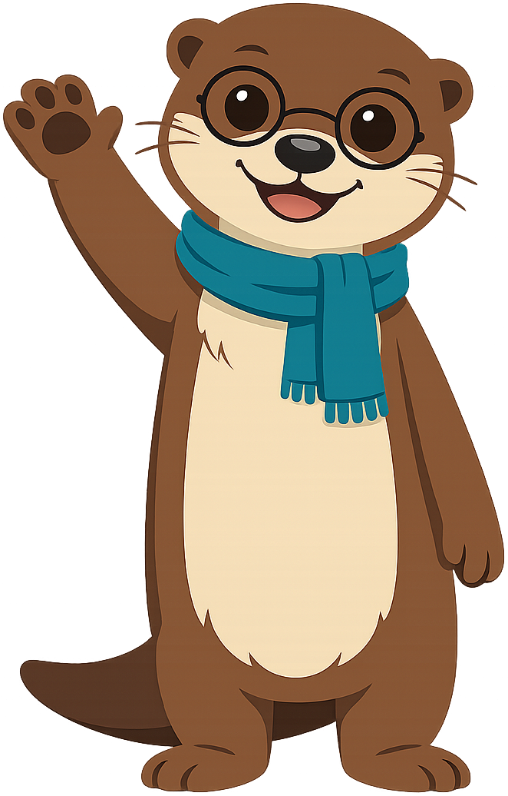
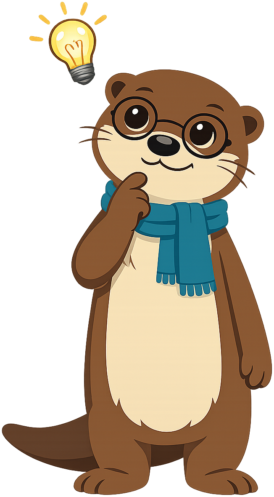

Chapter 9: Online Friends and How We Talk
Summary
Explore the difference between online and in-person friends, the meaning of tone and emoji in text, and how online conversations can be misunderstood.
This chapter is part of the Grade 5 Digital Citizenship learning progression. After completing it, students will be able to use the vocabulary, recognize the situations, and apply the habits introduced in the concepts listed below.
Concepts Covered
This chapter covers the following 13 concepts from the learning graph, listed in dependency order:
- Online Friend
- Tone In Text
- Direct Message
- Emoji Meaning
- Group Chat
- In Person Friend
- Video Chat
- Voice Chat
- Online Only Friend
- Read Receipt
- Text Misunderstanding
- Stranger Online
- Friend Request
Prerequisites
This chapter builds on concepts from:
- Chapter 1: Welcome to the Digital World
- Chapter 2: What Is a Digital Citizen?
- Chapter 8: Reputation, Sharing, and Giving Credit
Imani's One-Word Mistake
Imani is doing her math homework when her best friend Jada texts her: "Wanna come over Saturday?"
Imani is busy with a hard fraction problem. She types back one word — "fine." — and goes back to her math.
A few minutes later, Jada texts again: "Are you mad at me?"
Imani blinks. Mad? At Jada? Of course not. She loves Jada. They have been best friends since first grade. She types back, "What? No! Why??"
Jada replies, "You said fine. with a period. Like you didn't even want to come."
Imani sits very still. She wasn't mad. She was just busy. But the word fine on a screen, with no smile, no voice, no shrug — it can sound a hundred different ways depending on who is reading it.
Has that ever happened to you? You typed something quick, and the other person heard it totally wrong? This chapter is about why that happens, and how to talk to friends online in a way that everybody understands.
Hi Friends!

{kind=link}
Three Kinds of People You Talk to Online
Not everyone you talk to online is the same. Smart digital citizens learn to tell the three groups apart, because the rules for each group are different.
An in-person friend is a friend you also know in real life — someone you see at school, in your neighborhood, on a sports team, or at family events. Jada is an in-person friend of Imani's. You can be sure who an in-person friend is, because you have stood next to them in real life.
An online friend is someone you talk to mostly through screens. An online friend can be a cousin who lives far away, an in-person friend you keep in touch with after school, or a kid you met through a school project that connects classes from different cities. The big point is that you have some way of being sure who they really are — usually because a trusted adult helped set up the connection.
An online-only friend is someone you have never met in real life and only know through a screen. Online-only friends can be wonderful — kid pen pals from another country, members of a kid book club, fellow players in a game. But they can also be tricky, because you cannot be 100% sure they are who they say they are. Always tell a trusted adult about your online-only friends, and never share private information with them, even if they feel like the nicest person in the world.
There is one more group, and this group has a special name.
A stranger online is anyone on the internet whom you do not know at all and who has not been introduced to you by a trusted adult. A stranger online is not the same as an online-only friend. Online-only friends usually meet in safe kid spaces with grown-up rules. Strangers online can pop up anywhere — in comments, in random messages, in game chats — and they often try to get information from you that they should not have.
The rule is simple: never share private information with a stranger online, and never agree to meet a stranger online in real life. If a stranger online ever tries to get you to keep your conversation a secret from your parents, that is the biggest warning sign there is. Tell a trusted adult right away. You will not be in trouble for telling.
| Who | How you know them | Safe to chat? |
|---|---|---|
| In-person friend | School, neighborhood, family | Yes — you know who they really are |
| Online friend | Through a trusted adult or school program | Yes — with care and a trusted adult's blessing |
| Online-only friend | Met in a kid space, never in person | Carefully — never share private info |
| Stranger online | No introduction, just appeared | No — tell a trusted adult |
The Different Ways You Talk Online
Once you know who you are talking to, the next question is how. There are four main ways people talk on screens, and each one has its own feel.
A direct message is a private message sent from one person to one other person on a website or app. A direct message is just between the two of you (although remember Chapter 7 — screenshots can turn anything private into something public).
A group chat is a message space where three or more people can all read and write in the same conversation. Group chats are great for planning a birthday party, working on a school project, or keeping a club connected. They are also where misunderstandings happen the most, because every word you type is being read by everyone in the group at the same time.
A video chat is a conversation where you can see and hear each other through your devices. Video chat is the closest thing to being in the same room. You see the other person's face, their smile, the wave of their hand. That makes it the easiest way to avoid being misunderstood.
A voice chat is a conversation where you can hear each other but not see each other. You can hear if someone is laughing, sad, joking, or serious. Voice chat is somewhere between text and video — better than text for tone, less private than text for what you say.
Each one has its place. A quick "I'm running late" is fine as a text. A serious talk with your best friend should probably be a video or voice chat, where your tone can carry the meaning.
Tone, Emoji, and Misunderstanding
Now we get to the trickiest part. When you talk in person, your face, your voice, and your body do half the work. The words are only part of what you mean. When you type, all of that other stuff disappears.
Tone in text is the feeling the words seem to carry when someone reads them on a screen. Tone in text is invisible. The same six letters — "fine." — can sound calm, happy, annoyed, sad, or sarcastic. The reader has to guess. That is why text messages get misunderstood so easily.
Emoji meaning is what a small picture in a message tells the reader about the writer's feelings. A smiley face after "fine" turns it from cold to warm. A heart after "thanks" turns it from polite to grateful. Emojis are not decoration — they are how kind digital writers add tone back into text.
But emojis have their own trap. The same little face can mean different things to different people. A laughing emoji can mean "this is hilarious" to one kid and "I am laughing AT you" to another. When you are not sure what an emoji means, ask. There is no shame in asking.
When the reader guesses wrong about what you meant, that is called a text misunderstanding.
Text misunderstanding is when the reader of a text takes your meaning in a way you did not mean. Imani's "fine." was a text misunderstanding. The fix for a text misunderstanding is almost always the same: pause, take a breath, and either send a longer message that makes your tone clear, or pick up a video call and talk it out face to face.
There is one more thing in text chat that often makes feelings tricky.
Read receipt is a little marker that some apps show next to a message to say "the other person has seen this." Read receipts can feel friendly ("oh good, she got it!") but they can also feel awful ("she read it twenty minutes ago and never wrote back, why?"). Remember: a read receipt does not tell you what the other person is doing. They might be doing homework, eating dinner, or in the middle of soccer practice. A read receipt is not a reason to feel rejected.
A Big Idea

{kind=link}
Friend Requests — Choosing Who to Let In
Many websites and apps let you build a list of people who can see your stuff or chat with you. Adding someone to that list happens through a friend request.
A friend request is a message from one person asking another person to add them to their friend list. The person who gets the request can say yes (accept) or no (decline). Once you accept a friend request, the other person can usually see more of your stuff than a stranger could.
The rule for friend requests is: only accept requests from people you know in real life, and only after a trusted adult has helped you set up your account. If you get a friend request from someone you don't know, decline it. It is okay to say no. If you are not sure who someone is, ask the trusted adult who helps you with your account. They will not be upset that you asked. Asking is exactly what they are there for.
MicroSim: The Tone Translator
Tone Translator — interactive p5.js MicroSim
Type: microsim
sim-id: tone-translator
Library: p5.js
Status: Specified
Learning objective (Bloom: Apply): Given a short text message, the student can pick the tone the writer probably meant, then choose which emoji or extra words would make it harder to misread.
Visual elements:
- A responsive canvas (default 720 × 460, resizes with container width via
updateCanvasSize()called first insetup()). - A pretend phone screen in the center showing one short message ("ok", "fine.", "whatever", "sure", "k", "alright").
- Four tone buttons under the message: Friendly, Annoyed, Sad, Sarcastic.
- A second row of buttons that lets the student "rewrite" the message with one of three improvements: add an emoji, add a word, or send a voice note instead.
- A score area showing how many messages the student has "translated" to a clear tone.
Controls (built-in p5.js controls per project rules, placed at the bottom of the canvas):
createButton('Next message')to load the next pretend message.createButton('Reset')to clear the score.createSelect()to switch the imagined sender's mood: Calm, Busy, Tired, Excited.
Behavior:
- Each message has a most-likely intended tone, shown after the student chooses.
- The "rewrite" buttons show how the same message looks with a friendly fix.
- All examples are platform-agnostic — no real app icons or names.
Implementation notes:
- File location:
docs/sims/tone-translator/withmain.html,main.js, andindex.md. main.htmluses a plain<main></main>tag with noidattribute, so teachers can copymain.jsdirectly into the p5.js editor.- In
setup(), callupdateCanvasSize()first, thencanvas.parent(document.querySelector('main')). - Embedded into the chapter via an iframe in the chapter page once the sim files are built. The actual sim files are not part of this chapter task — only the spec lives here.
Implementation: p5.js sketch deployed at docs/sims/tone-translator/.
Imani's Quick Repair
Imani looks at the screen one more time. She knows what to do. She types: "Oh no! I'm so sorry! I was doing math and I just typed fast — I'd LOVE to come over Saturday! 🥰 Wanna FaceTime in five so I can show you the picture I drew?"
Jada writes back, "lol okay, I love you, see you in five."
The whole misunderstanding lasted four minutes. The fix took six seconds: a longer sentence, an emoji, and an offer to switch to video. That is the whole secret of talking online — when text gets confusing, add warmth, or move to a way of talking that has more tone in it.
Quick Recap
Here are the 13 new words you just learned in this chapter.
- Online friend — a friend you know mostly through screens
- Tone in text — the feeling words seem to carry on a screen
- Direct message — a private one-to-one message
- Emoji meaning — what a small picture says about feelings
- Group chat — a message space with three or more people
- In-person friend — a friend you also know in real life
- Video chat — a chat where you see and hear each other
- Voice chat — a chat where you hear but don't see each other
- Online-only friend — someone you've only met through a screen
- Read receipt — a marker showing the other person saw your message
- Text misunderstanding — when text is read in the wrong tone
- Stranger online — anyone you don't know who appears online
- Friend request — a message asking to be added to a friend list
High-Five, Friends!
Look at you — 13 new words about online friendships and how we talk! The biggest secret? When in doubt, add warmth. I'll see you in Chapter 10, where we'll learn the Safe Talk Rule and how to set boundaries that protect you. Until then — high-five!
{kind=link}